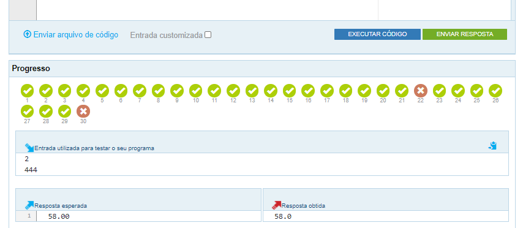

Atividade 7 - The Huxley
Material de apoio para a disciplina Linguagem de Programação da UACSA/UFRPE
Produzido pelo prof. João Pimentel
Recomendo que você comece pelo problema "Almoço na Cantina", que é o problema menos difícil desta Atividade.
Este problema não precisa de repetição (for ou while). O raciocínio dele é similar ao Exemplo 1 (quiz) da lição "Exemplos com if" - em vez de somar a quantidade de acertos, será somado o valor dos pratos.
Se lembre de criar seus próprios casos de teste, conforme explicado na Live 6.
Sobre o problema das maiúsculas ou minúsculas: você pode resolver isso usando a função upper() e fazendo a comparação com os textos em maiúsculas (ex: 'LASANHA', 'SUCO', ...)
É como se o programa já começasse perguntando: você deseja digitar os dados de mais um carro (s/n)? Quando a resposta for s ou S o programa vai perguntar pelo ano e depois pela velocidade do carro. Aí vai repetir a pergunta (s/n), e repetir enquanto a resposta for s ou S.
Como sempre, existem várias formas de resolver esse problema. Uma delas é criar duas listas vazias: uma para guardar os anos dos carros, e outra para guardar as velocidades dos carros. Depois se acrescenta os dados às listas, e por último se faz os cálculos apropriados com base nas listas.
continua ==>CORREÇÃO: o enunciado fala sobre a quantidade de carros, mas na verdade a saída deve ser:
- Maior velocidade (2 casas decimais)
- Maior ano
- Velocidade média (2 casas decimais)
COMPLEMENTO: o enunciado não explica isso, mas quando nenhum carro for digitado a saída deverá ser o texto 'zero'.
DIFICULDADE: não estranhe se você gastar 3 horas ou mais para resolver este problema.
Quando o Huxley diz que a resposta está errada quer dizer que, em alguns casos, o resultado do seu código não bateu com o gabarito. Se lembre de olhar a parte de baixo da tela para saber quais casos de teste estão errados e aperte nos X para ver se tem alguma dica disponível.
{kind=link}
Lembre-se de escolher a opção Python 3 quando for escrever a resposta no The Huxley.